Общая информация ⚓ Маршрут путешествия на машине ⚐ Особенности кухни ☀Особенности кухни Португалии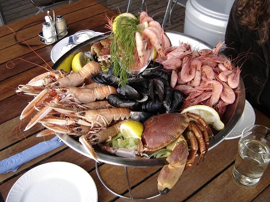Многие ошибочно полагают, что кухня Португалии является продолжением кулинарных предпочтений Испании. Тем не менее, в португальских блюдах прослеживается влияние многих народов и национальностей. Например, знаменитый горький перец пири больше известен в национальных блюдах африканских стран, а паста и чеснок – продукты, характерные для итальянской кухни. Португальцы любят и умеют использовать разнообразные специи, распространенные в Индии, придавай двум блюдам с одинаковыми ингредиентами совершенно разные вкусовые оттенки. Из средиземноморской кухни Португалия позаимствовала любовь к хлебу и оливкам. Учитывая географическое расположение государства – на берегу Атлантического океана – в португальском меню преобладают блюда из рыбы и морепродуктов. Блюда, характерные для континентальной части Португалии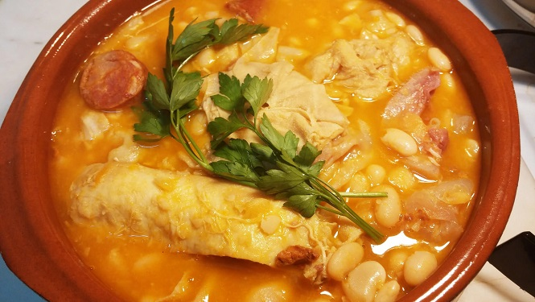Национальная кухня этой части страны хорошо известна по всей Европе. Прежде всего, это блюда из трески, которую в Португалии называют бакаляу. Готовят ее самыми разнообразными способами – с бобовыми, колбасками, добавляют в качестве начинки в пирожки, можно встретить даже пирожные с треской, которые называются Паштейш де ната. В Порту чтят традицию приготовления сардин в день всех святых. Если вы оказались в Порту, обязательно попробуйте рагу из потрохов – Трипаш. Именно это блюдо дало название всем жителям города – трипейруш, что в переводе означает – любители требухи. С появлением этого блюда связан исторический факт. Готовить еду из требухи местных жителей заставил голод. В середине 15 столетий монарх Дон Энрике отправился расширять национальные владения, для этого пришлось забить скот, который был в наличии у горожан. Жителям Порту нужно было выживать, поэтому блюда придумывали из всех продуктов, что осталось после солдат. Так появилось блюдо из требухи с добавлением овощей. Несмотря на то, что Трипаш появился пять столетий назад, блюдо и сегодня невероятно популярно. Блюда, характерные для Азорских островов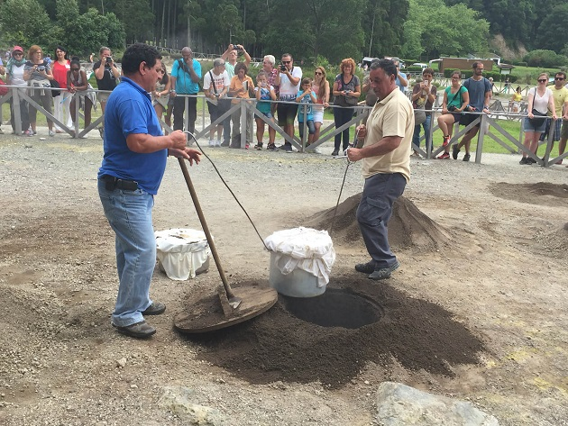Азорские острова – один из архипелагов Португалии. В целом, островная кухня во многом похожа на континентальную, но есть уникальные блюда. Например, Козиду даш фурнаш. Готовят его в жерле вулкана, опуская туда посуду с овощами и куриным мясом. На островах можно попробовать очень вкусный хлеб и множество сортов меда – такая еда входит ежедневный рацион местных жителей. Блюда, характерные для острова МадейраВ основе кухни этого острова лежат сельские традиции. В рационе жителей Мадейры также преобладают рыбные блюда. Встречаются и блюда из мяса – преимущественно из свинины или говядины. В качестве гарнира популярна кукуруза, бобовые и картошка фри. Что попробовать в ПортугалииНациональная кухня Португалии невероятно разнообразная, наполнена целой гаммой ярких вкусов и легких вкусовых оттенков. В каждой категории блюд обязательно найдется несколько кулинарных шедевров, которые нужно обязательно попробовать. Первые блюдаКалду верде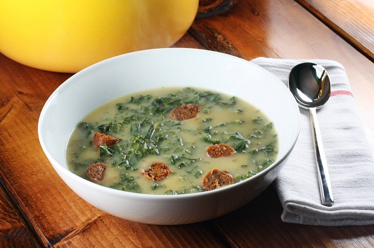Это знаменитый суп-пюре из капусты, который по своей популярности может сравниться со щами в России. Помимо капусты в него добавляют оливковое масло, паприку и особую копченую колбасу, приготовленную в Португалии, — ширису. Рыбный суп «Плачущая рыба капитана Видала»Видала – простой рыбак, который зарабатывал на жизнь тем, что ловил рыбу и продавал ее. Однажды экипаж судна, будучи в океане, остался без еды, и капитан принял решение приготовить суп из улова. В бульон моряки кидали живую рыбу, им казалось, что рыба плачет. Корабль вернулся без улова, но с вкусным, новым рецептом супа из трески, свежих овощей, соли и перца. Мясные блюдаПортугальцы мастерски готовят разные сорта мяса, предлагая туристам вкусные, оригинальные блюда. Их непременно стоит попробовать, будучи в Португалии. В мясной лавке кусок мяса могут разделать при покупателе и приготовить фарш. Помимо традиционных сортов мяса в Португалии едят мясо перепелов, коз и зайцев. Фейжоада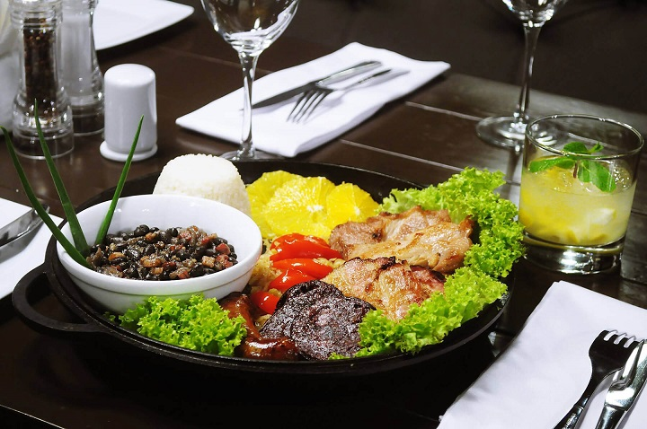Сытное, калорийное национальное блюдо, которое готовится из смеси бобов и разных сортов копченого мяса и колбас. В традиционной рецептуре присутствуют овощи и рис. В разных регионах страны Фейжоаду готовят по-разному, меняя ингредиенты. Альхейра де Мирандела (Alheira de Mirandela)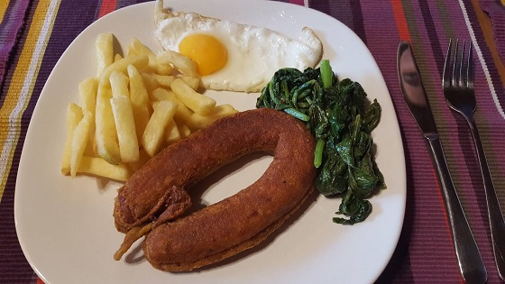Это португальская колбаса, которая готовится из любого сорта мяса кроме свинины. Считается, что в период средневековья блюдо придумали евреи с целью скрыть национальную принадлежность и уйти от преследований инквизиции. В соответствии с религиозными канонами евреи не имели права употреблять в пищу свинину, но благодаря колбаскам им удалось избежать голодной смерти и расправы инквизиторов. Курица Пири-пири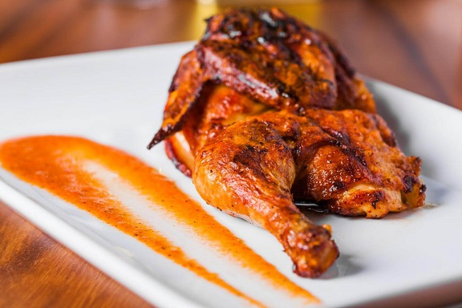Название «пири-пири» на языке суахили значит «жгучий перец». Готовится оно из куриных крылышек и совершенно невероятного соуса. Крылышки запекаются на протяжении 20 минут. Блюдо получается острым, с легкой кислинкой. Едят курицу со свежими овощами, салатами и чипсами. Пири-пири обязательно должна войти в список национальных португальских блюд, который нужно попробовать. Блюда из рыбы и морепродуктов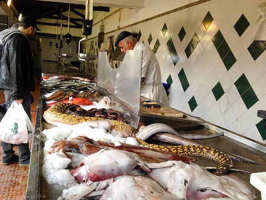Португальцы славятся своим умением готовить блюда из рыбы и морепродуктов. В любом магазине представлен огромный выбор рыбы и разнообразных моллюсков. Чаще всего продукты жарят на сковороде или гриле. В ассортименте крупных супермаркетов можно увидеть рыбу-меч, мурену. Португалия известна большим разнообразием рецептов приготовления трески. Наиболее популярный рецепт – засолка рыбы. Этот способ приготовления использовали португальские рыбаки, чтобы довести свежий улов до берега. Перед засолкой треску на протяжении суток вымачивали в воде. Во всех продуктовых магазинах можно приобрести засоленные тушки. Рыба, приготовленная на гриле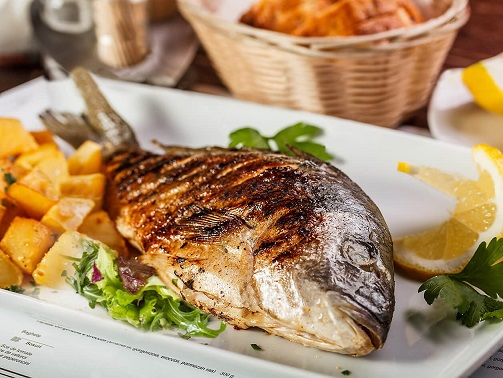Таким способом готовят любые сорта рыбы, в выходные дни многие местные жители устанавливают грили на балконах, от этого распространяется особый аромат. В ресторанах, как правило, подают огромные порции со свежими овощами или рисом, приправленным оливковым маслом. Морской черт с рисом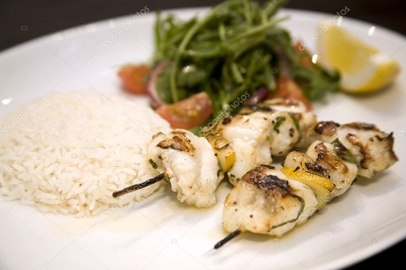Путешествуя по Португалии, обязательно попробуйте экзотическое блюдо из морского черта. Для его приготовления рыбу режут на порционные куски, перемешивают с рисов, томатами, разными специями и зеленью. Среди местных жителей это популярное блюдо, которое готовят на ужин. В ресторанах, которые специализируются на морской кухне, готовят аналогичное блюдо из осьминогов или моллюсков. Свинина Алентежу (Carne de Porco à Alentejana)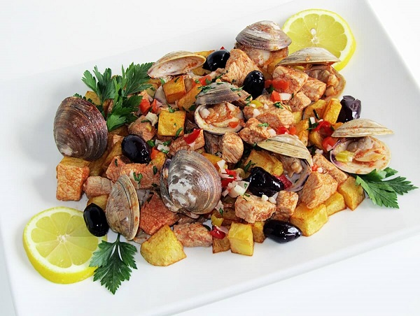Блюдо, которое потешит вкусовые рецепторы почитателей мяса и морепродуктов. Готовится оно из свинины и морепродуктов. Мясо маринуется в соусе, обжаривается, и добавляются моллюски. Подают и едят его с картофелем. |